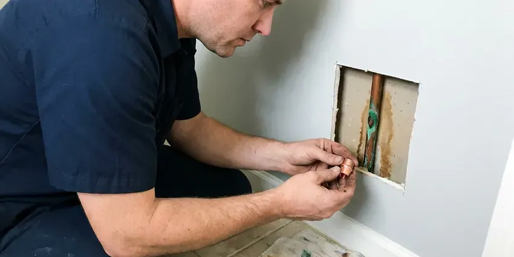

Water Leak Repair in Waukesha, WI
From pinhole copper leaks to failed PEX fittings and broken yard lines, we repair water leaks throughout Waukesha, WI with honest, upfront pricing.
- Accurate Leak Detection
- Slab Leak Experts
- Skilled Pipe Repair
- Foundation Safeguarding

Get Dependable Water Leak Solutions in Waukesha, WI.
Contact HKV Plumbing today for prompt and professional service that restores your peace of mind and prevents extensive water damage.
Trusted Water Leak Repair in Waukesha, WI
At HKV Plumbing, we specialize in comprehensive water leak repair for Waukesha, WI residents. Our skilled plumbers use modern tools to diagnose leaks accurately and implement effective solutions, saving you from future headaches and costly damage.
Our expertise includes:
- Slab Leak Detection and Repair
- PEX, Copper, and PVC Pipe Repair
- Acoustic ground microphones and thermal imaging for hidden leaks

Additional Plumbing Repair Services in Waukesha, WI
We offer expert plumbing repair services across Waukesha, WI to stop leaks, clear blockages, and keep every fixture working the way it should.


Customers
Why Choose HKV Plumbing for Water Leak Repair in Waukesha, WI?
Finding a leak early keeps the repair small and the damage contained. Our detection tools let us cut one small access hole instead of several large ones.
- Prompt Service, We offer fast response times to minimize water damage and restore your plumbing functionality quickly.
- Advanced Tools, We use non-invasive leak detection equipment like acoustic sensors and thermal imaging to find hidden leaks without unnecessary demolition.
- Durable Repairs, We use high-quality materials and proven techniques to ensure our repairs are robust and long-lasting, meeting local Waukesha codes.
Citywide Coverage
From downtown Waukesha to the surrounding suburbs, our service vehicles are always ready to respond to your water leak emergencies. We are committed to providing timely and efficient service across the entire Waukesha area.
Experienced Team
Our plumbing technicians have broad experience specifically with water leak repair, having resolved countless issues in Wisconsin homes. They are continuously trained on current repair methods and plumbing codes.
Safety-First Approach
All water leak repairs performed by HKV Plumbing are executed with the utmost attention to safety and code compliance. We make sure that all work meets or exceeds local Waukesha regulations, giving you peace of mind.
Trusted Certified Waukesha Plumbing Services Professionals
At HKV Plumbing, we take pride in providing licensed, certified plumbing services throughout Waukesha, WI. Backed by leading industry credentials, our experienced plumbers combine technical skill with genuine customer care. Whether it is repair, installation, or maintenance, we follow strict safety and quality standards to deliver long-lasting results you can trust.
Call Us Now PHCC Plumbing Contractor Recognition
PHCC Plumbing Contractor Recognition Better Business Bureau (BBB) Accreditation
Better Business Bureau (BBB) Accreditation Angi Certified Pro
Angi Certified Pro ISO 9001 Quality Management Certification
ISO 9001 Quality Management CertificationPrecise Water Leak Repair Services in Waukesha, WI
Copper Pinhole Leak Repair in Waukesha
Copper pipes in some homes develop pinhole leaks from water chemistry, high velocity or poor original installation. Hard water is common across much of Wisconsin, especially where supply comes from groundwater moving through limestone and dolomite. One pinhole frequently signals others nearby. We replace the damaged section with new copper or PEX and inspect the surrounding piping. If pinholes keep showing up, we discuss a partial or full repipe.

Underground Water Line Repair in Waukesha, WI
Leaks in underground water lines can be difficult to detect and repair, often signaled by sudden drops in water pressure or unusually wet spots in your yard. HKV Plumbing uses advanced trenchless technologies like pipe bursting or pipe lining where feasible, to minimize yard disruption. For more severe damage, traditional excavation is performed with precision. We repair PVC, galvanized, and copper service lines, providing a robust and long-lasting connection to your Waukesha home's main water supply.
Emergency Water Leak Repair in Waukesha, WI
A burst pipe or sudden, significant leak requires urgent attention to prevent extensive water damage. HKV Plumbing offers emergency water leak repair services across Waukesha, WI. Our rapid response team is available to promptly shut off water, assess the damage, and perform urgent repairs. We understand the stress these situations cause and focus on getting your plumbing back in order with minimal downtime, even outside regular business hours. Call us right away for any critical water leak issue.
Fixture & Faucet Leak Repair in Waukesha
Dripping faucets and leaky fixtures might seem minor, but they waste significant amounts of water and can lead to higher utility bills and water stains. Our team in Waukesha can diagnose and repair leaks in all types of fixtures, including kitchen and bathroom faucets, toilets, showers, and outdoor spigots. We replace worn-out washers, O-rings, cartridges, and seals, or if necessary, recommend and install new, water-efficient fixtures. We work with all major brands like Moen, Delta, Kohler, and American Standard, providing a lasting, drip-free solution.
Fixture and Supply Line Leak Repair in Waukesha, WI
Many leaks are at faucets, toilets, angle stops and braided supply lines. These small drips can rot cabinet floors and waste hundreds of gallons. We replace worn cartridges, flappers, fill valves, shutoff valves and supply lines. Replacing old plastic supply lines with braided stainless is a low-cost way to prevent a flood.
Water Heater Leak Repair in Waukesha
A leaking water heater can be a sign of a serious problem, from a failing pressure relief valve to a corroded tank. Our technicians in Waukesha are experienced in diagnosing and repairing leaks in both traditional tank-style and tankless water heaters. We'll inspect the unit, identify the source of the leak, and provide an straight assessment of whether a repair is viable or if replacement is the more cost-effective solution. We work with all major brands like Rheem, AO Smith, and Bradford White.
Emergency Water Leak Services in Waukesha
Water leaks don't keep business hours, and an emergency requires immediate attention. Our team is available 24/7 for urgent water leak repairs in Waukesha. Whether it's a sudden pipe burst in the middle of the night or a significant leak threatening your property, we respond quickly. We arrive with fully stocked vehicles to perform quick diagnostics and effective repairs, helping to limit damage and restore your peace of mind as swiftly as possible.

Hidden Leak Detection in Waukesha
Many leaks occur out of sight, within walls, under floors, or behind appliances, leading to serious damage before they become visible. HKV Plumbing utilizes modern leak detection equipment, including acoustic listening devices, infrared cameras, and tracer gas systems, to pinpoint these elusive leaks without invasive demolition. Our accurate detection minimizes repair costs and disruption, protecting your Waukesha home from unseen water damage and potential mold growth.
Water Leak Repair Near Me in Waukesha, WI
Local plumbers understand how soil, water pressure and pipe materials combine to cause leaks in homes here. We use that knowledge to find leaks faster. Then we repair them to last.
When you search for water leak repair near me in Waukesha, you want a local company that understands the plumbing challenges of Wisconsin. HKV Plumbing is your neighborhood expert, ready to dispatch skilled technicians to your home quickly. We're familiar with the local infrastructure and common building practices, providing a fast and effective response to your plumbing emergency.
HKV Plumbing at a Glance
- Licensed and insured plumbers serving Waukesha, WI
- 24/7 emergency service with same-day scheduling
- Clear written estimates, no hidden fees
- 4.8-star rated by 448+ Wisconsin customers
Waukesha Map
Waukesha Information
- Population
- 8,484
- Area codes
- 262/414/920
- Service area
- Waukesha and communities within 40 miles
- Nearby
- West Allis, Wauwatosa, Milwaukee, Racine
Glacial soils in Wisconsin range from heavy clay to sand and gravel, which affects how water moves around foundations and buried lines. Prompt water leak repair protects homes in Waukesha, WI from the foundation shifts and stressed underground pipes that lead to slab leaks.
Expert Services
Trust our professionals for reliable HKV Plumbing solutions in Waukesha, WI.
Our Specialized Plumbing Services in Waukesha, WI
At HKV Plumbing, we provide a complete range of plumbing services across Waukesha, WI. From leak detection to full system installations, our team ensures fast, precise, and affordable service for both residential and commercial properties. Explore our core services below:


How Our Water Leak Repair Process Works in Waukesha, WI
Our leak repair process is built to find the problem fast and fix it with as little disruption as possible.
Request a Quote
Contact us at (414) 432-4641 or fill out our online form to schedule your water leak repair service. Our customer service team will gather details about your leak and set up an appointment at your convenience.
Leak Detection
Our certified plumber arrives on time with advanced diagnostic tools to accurately locate the source of the leak. This includes using acoustic sensors or thermal cameras to find hidden leaks without needless demolition.
Expert Repair
Once the leak is located, we present you with a clear, upfront estimate and discuss the best repair options. Our team then performs the necessary repairs using high-quality, durable materials and techniques that comply with all local codes.
Frequently Asked Questions About Water Leak Repair in Waukesha
Simple fixture leaks often cost $150 to $400, while in-wall leaks run about $300 to $900 before patching. Slab and yard line leaks typically range from $1,000 to $4,000. We provide a firm price after locating the leak.
Most fixture and wall leak repairs take one to three hours. Slab and yard line repairs may take a full day, particularly if a reroute is chosen.
Typically only a small opening is needed because we pinpoint the leak before cutting. For slab leaks, rerouting the line through walls or the attic can avoid breaking the floor entirely.
Repeat pinholes usually come from water chemistry, high water pressure or thin-walled copper. We test your pressure and inspect the regulator, and we discuss repiping if leaks keep returning.
Water pipes can leak due to many factors including age and corrosion, shifting soil that stresses pipes, high water pressure, and freezing temperatures that can cause pipes to burst. During extreme cold, some communities advise residents to run a small stream of water to keep service lines from freezing. Hard water can also contribute to scale buildup and eventual pipe degradation.
Yes, HKV Plumbing understands that some water leaks require immediate attention. We offer emergency water leak repair services in Waukesha, WI to address burst pipes, major flooding, and other critical plumbing issues promptly. Call us right away if you're experiencing a plumbing emergency.
While minor leaks like a dripping faucet might be a DIY fix, it's usually best to call a professional for most water leaks. Hidden leaks, especially in walls or under slabs, require specialized equipment for detection and proper repair to prevent further damage and ensure code compliance. Botched repairs can lead to more significant problems down the line.
Small repairs typically do not. Larger reroutes or repipes may require a permit depending on your city, and we take care of that when needed.
What People Are Saying About Our Plumbing Experts?

Sofia M.
Two new toilets installed in one visit, no mess left behind, and the tech even adjusted a faucet he noticed was dripping. Fair pricing and really friendly.
Toilet Installation · Wauwatosa, WI
Emily R.
I called HKV Plumbing for plumbing repair, and the technician was fast, polite, and thorough. They explained the problem clearly and fixed it the same day. I will definitely hire them again. Highly recommended!
Plumbing Repair · Racine, WI
Mark T.
When our office needed drain cleaning, HKV Plumbing provided quick, reliable service. The plumber arrived on time and made sure every drain flowed perfectly before leaving. Very satisfied.
Drain Cleaning · Racine, WILaura S.
I scheduled a water heater replacement, and the team made the process smooth and affordable. The new unit works perfectly, and they cleaned up after completing the job.
Water Heater Replacement · Kenosha, WI
Daniel K.
A pipe burst at 11 pm and they actually answered. The plumber showed up within the hour, shut everything down, and had us back to normal the next morning. Could not ask for more.
Emergency Plumbing · Kenosha, WI
Robert G.
The trenchless sewer replacement saved our front yard. They walked us through the camera inspection footage first so we knew exactly what we were paying for.
Sewer Line Replacement · Wauwatosa, WI